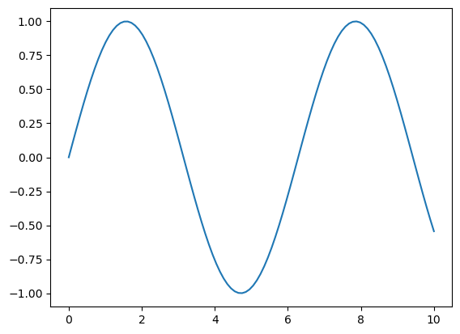

3 Enhancing Workflow in Jupyter Notebooks
3.1 Learning Objectives
In this lecture, we’ll explore how to optimize your workflow in Jupyter notebooks by leveraging magic commands and shell commands, understanding file paths, and interacting with the filesystem using the os module.
By completing this lecture, you will be able to:
- Run shell commands directly within a notebook.
- Navigate and manipulate files and directories efficiently.
- Integrate external tools and scripts seamlessly into your workflow.
By mastering these techniques, you’ll be able to work more efficiently and handle complex data science tasks with ease.
3.2 Magic Commands
3.2.1 What are Magic Commands?
Magic commands in Jupyter are shortcuts that extend the functionality of the notebook environment. There are two types of magic commands: - Line magics: Commands that operate on a single line. - Cell magics: Commands that operate on the entire cell.
In Jupyter notebooks, line magic commands are invoked by placing a single percentage sign (%) in front of the statement, allowing for quick, inline operations, while cell magic commands are denoted with double percentage signs (%%) at the beginning of the cell, enabling you to apply commands to the entire cell for more complex tasks.
You can access the full list of magic commands by typing:
Code
# show all the avaiable magic commands on the system
%lsmagic Available line magics:
%alias %alias_magic %autoawait %autocall %automagic %autosave %bookmark %cd %clear %cls %code_wrap %colors %conda %config %connect_info %copy %ddir %debug %dhist %dirs %doctest_mode %echo %ed %edit %env %gui %hist %history %killbgscripts %ldir %less %load %load_ext %loadpy %logoff %logon %logstart %logstate %logstop %ls %lsmagic %macro %magic %mamba %matplotlib %micromamba %mkdir %more %notebook %page %pastebin %pdb %pdef %pdoc %pfile %pinfo %pinfo2 %pip %popd %pprint %precision %prun %psearch %psource %pushd %pwd %pycat %pylab %qtconsole %quickref %recall %rehashx %reload_ext %ren %rep %rerun %reset %reset_selective %rmdir %run %save %sc %set_env %store %sx %system %tb %time %timeit %unalias %unload_ext %uv %who %who_ls %whos %xdel %xmode
Available cell magics:
%%! %%HTML %%SVG %%bash %%capture %%cmd %%code_wrap %%debug %%file %%html %%javascript %%js %%latex %%markdown %%perl %%prun %%pypy %%python %%python2 %%python3 %%ruby %%script %%sh %%svg %%sx %%system %%time %%timeit %%writefile
Automagic is ON, % prefix IS NOT needed for line magics.3.2.2 Line Magic Commands
3.2.2.1 %time: Timing the execution of code
In data science, it is often crucial to evaluate the performance of specific code snippets or algorithms, and the %time magic command provides a simple and efficient way to measure the execution time of individual statements, helping you identify bottlenecks and optimize your code for better performance.
Code
def my_dot(a, b):
"""
Compute the dot product of two vectors
Args:
a (ndarray (n,)): input vector
b (ndarray (n,)): input vector with same dimension as a
Returns:
x (scalar):
"""
x=0
for i in range(a.shape[0]):
x = x + a[i] * b[i]
return xCode
import numpy as np
np.random.seed(1)
a = np.random.rand(10000000) # very large arrays
b = np.random.rand(10000000)Let’s use %time to measure the execution time of a single line of code.
Code
# Example: Timing a list comprehension
%time np.dot(a, b)CPU times: total: 15.6 ms
Wall time: 32.9 ms2501072.5816813153Code
%time my_dot(a, b)CPU times: total: 1.88 s
Wall time: 1.86 s2501072.5816813707To capture the output of %time (or %timeit), you cannot directly assign it to a variable as it’s a magic command that prints the result to the notebook’s output. However, you can use Python’s built-in time module to manually time your code and assign the execution time to a variable.
Here’s how you can do it using the time module:
Code
import time
tic = time.time() # capture start time
c = np.dot(a, b)
toc = time.time() # capture end time
print(f"np.dot(a, b) = {c:.4f}")
print(f"Vectorized version duration: {1000*(toc-tic):.4f} ms ")
tic = time.time() # capture start time
c = my_dot(a,b)
toc = time.time() # capture end time
print(f"my_dot(a, b) = {c:.4f}")
print(f"loop version duration: {1000*(toc-tic):.4f} ms ")
del(a);del(b) #remove these big arrays from memorynp.dot(a, b) = 2501072.5817
Vectorized version duration: 2.9922 ms
my_dot(a, b) = 2501072.5817
loop version duration: 2004.3225 ms 3.2.2.2 %matplotlib inline: Displaying plots inline
This command allows you to embed plots within the notebook.
Code
# Example: Using %matplotlib inline to display a plot
import matplotlib.pyplot as plt
import numpy as np
%matplotlib inline
x = np.linspace(0, 10, 100)
y = np.sin(x)
plt.plot(x, y);
3.2.3 Cell Magic Commands
A cell magic command in Jupyter notebook has to be the first line in the code cell
3.2.3.1 %%time: Timing cell execution
This cell magic is useful for measuring the execution time of an entire cell.
Code
%%time
# Example: Timing a cell with matrix multiplication
A = np.random.rand(1000, 1000)
B = np.random.rand(1000, 1000)
C = np.dot(A, B)CPU times: total: 219 ms
Wall time: 23 msQuestion: there are several timing magic commands that can be confusing due to their similarities, they are %time,%timeit, %%time, and %timeit. Do your own research on the differences among them
3.3 Shell Commands in Jupyter Notebooks
What are Shell Commands?
Shell commands let you interact directly with your computer’s operating system from within a Jupyter notebook. This means you can manage files, check your environment, and run system tools without leaving your notebook. To run a shell command in Jupyter, start the line with an exclamation mark (!). For example, !ls lists files on macOS/Linux, while !dir does the same on Windows.
How does it work? - Python code is executed by the IPython kernel inside the notebook. - Shell commands (lines starting with !) are sent to your computer’s shell (like Bash, Command Prompt, or PowerShell), not to Python. - This separation means you can use both Python and shell commands in the same notebook, but they run in different environments.
3.3.1 Using Shell Commands
3.3.1.1 Print the current working directory
To see where your notebook is running, use: - On macOS/Linux: !pwd - On Windows: !cd
This helps you understand where files will be saved or loaded from.
Code
!cdc:\Users\lsi8012\Documents\Courses\FA24\DataScience_Intro_python_fa24_Sec20_213.3.1.2 !ls (!dir on Windows): Listing files and directories
To view all files and folders in your current directory, use a shell command:
On macOS/Linux:
!lsOn Windows:
!dir
This is useful for quickly checking what data, scripts, or notebooks are available in your workspace. If you want to see hidden files (those starting with a dot), use !ls -a on macOS/Linux or !dir /a on Windows.
Tip: If you get an error, double-check that you are using the correct command for your operating system.
Code
!dir Volume in drive C is Windows
Volume Serial Number is A80C-7DEC
Directory of c:\Users\lsi8012\Documents\Courses\FA24\DataScience_Intro_python_fa24_Sec20_21
03/12/2025 10:46 AM <DIR> .
03/12/2025 10:46 AM <DIR> ..
10/20/2024 04:13 PM <DIR> .github
10/20/2024 04:13 PM 11 .gitignore
10/20/2024 04:13 PM <DIR> .ipynb_checkpoints
10/20/2024 04:13 PM 8 .nojekyll
10/20/2024 04:24 PM <DIR> .quarto
03/12/2025 10:29 AM 6,933,867 Advanced_Data_Visualization.html
11/02/2024 03:12 PM 8,688,961 Advanced_Data_Visualization.ipynb
03/12/2025 10:31 AM <DIR> Advanced_Data_Visualization_files
10/20/2024 04:13 PM 9,325 Assignment 1 (Reading data).ipynb
10/20/2024 04:13 PM 14,013 Assignment 2 (NumPy).ipynb
10/20/2024 04:13 PM 18,098 Assignment 3 (Pandas).ipynb
10/20/2024 04:13 PM 22,821 Assignment 4 (Data Visualization).ipynb
10/20/2024 04:13 PM 96,997 Assignment 5 (Data cleaning and preparation).ipynb
10/20/2024 04:13 PM 17,038 Assignment 6 (Data wrangling).ipynb
10/20/2024 04:13 PM 14,220 Assignment 7 (Data aggregation).ipynb
03/12/2025 10:29 AM 137,354 Assignment A.html
10/20/2024 04:19 PM 43,769 Assignment A.ipynb
03/12/2025 10:29 AM 60,301 Assignment B.html
10/20/2024 04:19 PM 14,820 Assignment B.ipynb
03/12/2025 10:29 AM 60,966 Assignment C.html
10/20/2024 04:19 PM 18,169 Assignment C.ipynb
03/12/2025 10:29 AM 2,748,253 Assignment D.html
10/27/2024 11:43 AM 22,209 Assignment D.ipynb
03/12/2025 10:29 AM 68,850 Assignment E.html
11/19/2024 02:00 PM 19,393 Assignment E.ipynb
03/12/2025 10:29 AM 53,070 Assignment F.html
11/19/2024 02:08 PM 13,742 Assignment F.ipynb
10/20/2024 04:13 PM 14,782 Assignment G.ipynb
10/20/2024 04:13 PM 40,794 authors.jpg
10/20/2024 04:13 PM 7,562 chck.csv
10/20/2024 04:13 PM 4,299 co.csv
10/20/2024 04:13 PM 5,647 coords.csv
10/20/2024 04:13 PM 51,194 cover.png
10/20/2024 04:13 PM 651,392 Data aggregation inclass.ipynb
03/12/2025 10:29 AM 225,805 Data aggregation.html
12/14/2024 02:41 PM 300,468 Data aggregation.ipynb
03/12/2025 10:31 AM <DIR> Data aggregation_files
03/12/2025 10:29 AM 204,720 Data cleaning and preparation.html
11/10/2024 11:35 AM 1,050,426 Data cleaning and preparation.ipynb
03/12/2025 10:31 AM <DIR> Data cleaning and preparation_files
03/12/2025 10:29 AM 172,605 Data visualization.html
10/21/2024 09:53 AM 1,628,169 Data visualization.ipynb
03/12/2025 10:31 AM <DIR> Data visualization_files
11/10/2024 11:41 AM 367,702 Data wrangling copy.ipynb
03/12/2025 10:29 AM 185,198 Data wrangling.html
11/11/2024 09:53 AM 425,911 Data wrangling.ipynb
03/12/2025 10:31 AM <DIR> Data wrangling_files
11/25/2024 01:01 PM <DIR> Datasets
03/12/2025 10:29 AM 31,229 Datasets.html
10/20/2024 04:13 PM 1,156 Datasets.ipynb
10/20/2024 04:13 PM 37,147 datatypes.png
10/20/2024 04:13 PM 163,888 data_structures-Copy1.ipynb
03/12/2025 10:28 AM 288,147 data_structures.html
10/20/2024 04:13 PM 178,946 data_structures.ipynb
03/12/2025 10:29 AM 120,990 data_types_in_pandas.html
12/01/2024 11:00 PM 103,025 data_types_in_pandas.ipynb
03/12/2025 10:31 AM <DIR> data_types_in_pandas_files
10/20/2024 04:13 PM 5,834 dpop.csv
10/20/2024 04:13 PM 705,800 ds_image.jpg
11/22/2024 03:25 PM <DIR> example_directory
10/20/2024 04:13 PM <DIR> hello_files
11/25/2024 12:27 PM <DIR> images
10/20/2024 04:13 PM 457,384 inClass_Data wrangling.ipynb
03/12/2025 10:31 AM 24,666 index.aux
03/12/2025 10:28 AM 32,316 index.html
03/12/2025 10:31 AM 70,189 index.log
03/12/2025 10:31 AM 1,041,600 index.pdf
03/11/2025 05:28 PM 1,251 index.qmd
03/12/2025 10:31 AM 1,462,894 index.tex
03/12/2025 10:31 AM 0 index.toc
10/20/2024 04:13 PM 10 intro.qmd
03/12/2025 10:28 AM 144,381 Introduction to Python and Jupyter Notebooks.html
10/20/2024 04:13 PM 64,982 Introduction to Python and Jupyter Notebooks.ipynb
10/20/2024 04:13 PM 361,557 Introduction-to-Data-Science-with-Python.pdf
10/20/2024 04:13 PM 1,115 In_class_exercise1.ipynb
10/20/2024 04:13 PM <DIR> In_class_exercise1_files
10/20/2024 04:13 PM 20,566 LICENSE.txt
10/20/2024 04:13 PM 1,086 movies_sample_data.csv
10/20/2024 04:13 PM 0 movie_data.json
10/20/2024 04:13 PM 242,761 movie_ratings.csv
10/20/2024 04:13 PM 109,910 NumPy copy.ipynb
03/12/2025 10:29 AM 241,607 NumPy.html
11/24/2024 10:04 AM 113,396 NumPy.ipynb
10/20/2024 04:13 PM 23,179 NU_Stat_logo.png
03/12/2025 10:29 AM 269,968 Pandas.html
10/20/2024 04:13 PM 284,987 Pandas.ipynb
10/20/2024 04:13 PM 32,813,480 party_edited.csv
10/20/2024 04:13 PM 1,361 quarto_yml_file_Fall_2022.txt
10/20/2024 04:13 PM 6,496 questions_test - Copy.json
03/12/2025 10:29 AM 261,769 Reading data.html
11/22/2024 08:49 PM 279,118 Reading data.ipynb
10/20/2024 04:13 PM 243,254 Reading_data.html
10/20/2024 04:13 PM <DIR> Reading_Data_files
10/20/2024 04:13 PM 189 README.md
10/20/2024 04:13 PM 428 references.bib
10/20/2024 04:13 PM 48 references.qmd
10/20/2024 04:13 PM 811 requirements.txt
10/20/2024 04:13 PM 0 requirements.txt.txt
10/20/2024 04:13 PM 112,248 rough.ipynb
03/12/2025 10:46 AM 86 sample.txt
03/12/2025 10:34 AM 1,019,165 search.json
10/20/2024 04:13 PM <DIR> site_libs
10/20/2024 04:13 PM 34,315,856 spotify_data.csv
10/20/2024 04:13 PM 23,534,086 spotify_text.txt
10/20/2024 04:13 PM 149,442 student_solutions-Copy1.ipynb
10/20/2024 04:13 PM 286,932 student_solutions.ipynb
10/20/2024 04:13 PM <DIR> student_solutions_files
10/20/2024 04:13 PM 63 summary.qmd
10/20/2024 04:13 PM 1,205 test_file.ipynb
10/20/2024 04:13 PM 5,216 test_file.pdf
10/20/2024 04:13 PM <DIR> test_file_files
11/22/2024 03:28 PM <DIR> test_folder
10/20/2024 04:13 PM 1,116 text.txt
10/20/2024 04:13 PM 66,988 Untitled.ipynb
10/20/2024 04:13 PM 19,849 Untitled1.ipynb
10/20/2024 04:13 PM 3,942 Untitled2.ipynb
10/20/2024 04:13 PM 6,085 Untitled3.ipynb
10/20/2024 04:13 PM 18,861 Untitled4.ipynb
03/12/2025 10:28 AM 87,254 venv_setup.html
11/22/2024 09:12 PM 37,627 venv_setup.ipynb
10/20/2024 04:13 PM 1,864 welcome.ipynb
10/20/2024 04:13 PM 65,157 wordle.txt
03/12/2025 10:34 AM 104,246 workflow_enhance.html
03/12/2025 10:47 AM 74,123 workflow_enhance.ipynb
03/12/2025 10:34 AM <DIR> workflow_enhance_files
03/11/2025 05:31 PM 1,368 _quarto.yml
106 File(s) 124,538,629 bytes
22 Dir(s) 49,998,643,200 bytes free3.4 Installing Required Packages Within Your Notebook
When working in Jupyter notebooks, you often need to install new Python packages. There are two main ways to do this:
Shell Command:
Use an exclamation mark (
!) before the command:!pip install package_name
This runs the command in your system shell, which may not always install the package in the same environment as your notebook kernel.
Magic Command:
Use a percent sign (
%) before the command:%pip install package_name
This is Jupyter-specific and ensures the package is installed in the environment where your notebook is running.
Best Practice:
Prefer
%pip install package_namein Jupyter notebooks to avoid confusion about which environment is being updated.If you use
!pip install, double-check that the package is available in your notebook (sometimes you may need to restart the kernel).
Example:
%pip install numpy# Installs numpy in the notebook’s environment!pip install numpy# Installs numpy using the system shell (may differ from notebook environment)
To guarantee that package installation happens in the same environment as your notebook kernel, use the Python executable associated with the running notebook. This avoids issues where packages are installed in a different environment than the one your code is using.
How to do this:
Use the following command to ensure
pipinstalls to the correct environment:import sys !{sys.executable} -m pip install package_name
This method is especially useful if you have multiple Python environments or are unsure which one is active in your notebook.
Code
import sys
!{sys.executable} -m pip install numpyRequirement already satisfied: numpy in c:\users\lsi8012\appdata\local\anaconda3\lib\site-packages (1.26.4)Unlike shell commands, the %pip magic command is designed specifically for Jupyter notebooks. It automatically installs packages into the exact environment your notebook kernel is using, reducing confusion and installation errors.
Why use %pip?
- It guarantees that the installed package will be available in your current notebook session.
- No need to worry about mismatched environments or restarting the kernel after installation.
Example:
%pip install numpyThis will install numpy directly into the notebook’s environment, making it immediately available for import and use.
Code
%pip install numpyRequirement already satisfied: numpy in c:\users\lsi8012\appdata\local\anaconda3\lib\site-packages (1.26.4)
Note: you may need to restart the kernel to use updated packages.In most cases, you don’t need to type % before pip install numpy because Jupyter’s “automagic” feature is enabled by default. Automagic lets you use some magic commands without the % prefix, as long as there isn’t a variable with the same name in your code.
How automagic works:
- If you type
pip install numpy, Jupyter will interpret it as%pip install numpyautomatically. - If you have a variable named
pip, the command will use the variable instead, which can cause unexpected behavior.
Best practice:
- Use
%pip install ...for clarity and to avoid conflicts. - Automagic is convenient, but explicit magic commands are safer in shared or complex notebooks.
Tip: Not all magic commands work with automagic—some still require the % or %% prefix.
Code
pip install numpyRequirement already satisfied: numpy in c:\users\lsi8012\appdata\local\anaconda3\lib\site-packages (1.26.4)
Note: you may need to restart the kernel to use updated packages.3.5 Specifying Your File Path
Understanding how to specify file paths in Python is essential for loading and saving data. File paths tell Python where to find or store your files, such as datasets, results, or scripts.
There are two main types of file paths: absolute paths and relative paths.
- Absolute Path: Gives the complete location of a file or folder from the root of your file system. It always points to the same place, no matter where your code is running.
- Relative Path: Specifies the location of a file or folder in relation to your current working directory. It is shorter and more flexible, making your code easier to share and reuse.
Choosing the right type of path helps avoid errors and makes your code more portable across different computers and operating systems.
3.5.1 Absolute Path
An absolute path provides the full address to a file or directory, starting from the root of your system. It does not depend on where your code is running.
Example (Windows):
Code
# Absolute path example (Windows)
file_path = r"C:\Users\Username\Documents\data.csv"Code
!conda env list# conda environments:
#
base * C:\Users\lsi8012\AppData\Local\anaconda3
The path associated with each conda env is absolute path.
3.5.2 Relative Path
A relative path describes the location of a file or folder in relation to your current working directory. It is shorter, more flexible, and makes your code easier to share and run on different computers.
Relative paths are especially useful in projects with organized folder structures, because they allow you to move your code and data together without changing file references.
To find your current working directory in Python, you can use either a magic command or a shell command:
Magic command:
%pwdShell command:
!cd(Windows) or!pwd(macOS/Linux)
Knowing your current working directory helps you understand where Python will look for files when using relative paths.
Code
# Magic command
%pwd'c:\\Users\\lsi8012\\Documents\\Courses\\FA24\\DataScience_Intro_python_fa24_Sec20_21'Code
# Shell command
!cdc:\Users\lsi8012\Documents\Courses\FA24\DataScience_Intro_python_fa24_Sec20_21Example of a Relative Path:
Code
# Example of relative path
file_path = "sample.txt" # Relative to the current directoryThe relative path sample.txt means that there is a file in the current working directory.
3.5.3 Methods to Specify File Paths in Windows
Specifying file paths correctly is crucial for avoiding errors and making your code portable. Windows uses backslashes (\) to separate folders, but in Python, a single backslash is an escape character (e.g., \n for newline), which can lead to mistakes if not handled properly.
Here are four reliable ways to specify file paths in Windows:
3.5.3.1 Method 1: Using Escaped Backslashes
Use double backslashes (\\) to prevent Python from interpreting them as escape characters.
Code
file_path = "C:\\Users\\Username\\Documents\\data.csv"3.5.3.2 Method 2: Using Raw Strings
Prefix the path with r to tell Python to treat backslashes as literal characters.
Code
file_path = r"C:\Users\Username\Documents\data.csv"3.5.3.3 Method 3: Using forward slashes (/)
Python accepts forward slashes (/) in file paths, even on Windows. This is often the simplest and most portable method.
Code
file_path = "C:/Users/Username/Documents/data.csv"3.5.3.4 Method 4: Using os.path.join
Use os.path.join() to build paths programmatically. This method automatically uses the correct separator for your operating system, making your code cross-platform.
Using these methods helps prevent bugs, makes your code easier to share, and ensures it works on different computers and operating systems.
Code
import os
file_path = os.path.join("C:", "Users", "Username", "Documents", "data.csv")This method works across different operating systems because os.path.join automatically uses the correct path separator (\ for Windows and /for Linux/Mac).
3.5.4 File paths in macOS and Linux
macOS and Linux use forward slashes (/) as path separators, which is exactly what Python expects by default. This means you can specify file paths directly, like /Users/yourname/Documents/data.csv, without worrying about escape characters or compatibility issues.
Why is this helpful? - Forward slashes work seamlessly in Python on macOS, Linux, and even Windows. - You avoid common errors caused by backslashes (which are escape characters in Python). - Code written with forward slashes is portable and recommended for all platforms.
3.5.4.1 Best Practices for File Paths in Data Science
- Prefer relative paths within your project folders—this makes your code portable and easy to share or move.
- Use absolute paths only for files outside your project or when you need a fixed location.
- Always check your current working directory before reading or writing files to avoid confusion and errors.
- Avoid hardcoding file paths directly in your code; use variables or configuration files for flexibility.
- For cross-platform compatibility, use forward slashes (
/) in file paths or build paths programmatically withos.path.join(). - Document your file structure and path conventions in your project README to help collaborators.
- When sharing code, test file paths on both Windows and macOS/Linux to ensure portability.
3.6 Interacting with the OS and Filesystem
In data science projects, you often work with data files (such as CSV, Excel, or JSON) stored in various folders. Managing these files efficiently is essential for reproducible workflows and organized projects.
The Python os module provides powerful tools to interact with your operating system and manage files and directories directly from your notebook. With os, you can: - Check your current working directory - List files and folders - Create, rename, or delete directories - Move between folders - Check if files or folders exist before using them
Let’s import the os module and explore some of its most useful functions for data science tasks.
Code
import osWe can get the location of the current working directory using the os.getcwd function.
Code
os.getcwd()'c:\\Users\\lsi8012\\Documents\\Courses\\FA24\\DataScience_Intro_python_fa24_Sec20_21'The command os.chdir('..') in Python changes the current working directory to the parent directory of the current one.
Note that .. as the path notation for the parent directory is universally true across all major operating systems, including Windows, macOS, and Linux. It allows you to move one level up in the directory hierarchy, which is very useful when navigating directories programmatically, especially in scripts where directory traversal is needed.
Code
os.chdir('..')Code
os.getcwd()'c:\\Users\\lsi8012\\Documents\\Courses\\FA24'os.chdir() is used to change the current working directory.
For example: os.chdir('./week2')
./week2 is a relative path:
.refers to the current directory.- week2 is a folder inside the current directory.
The os.listdir() function in Python returns a list of all files and directories in the specified path. If no path is provided, it returns the contents of the current working directory.
Code
os.listdir()['.ipynb_checkpoints',
'303-1',
'362',
'DataScience_Intro_python_fa24_Sec20_21',
'EDA.pdf',
'test_folder',
'UG TA info for Instructors.pdf']Check whether a specific folder/file exist in the current working directory
Code
'data' in os.listdir('.')False3.7 Independent Study
3.7.1 Setting Up Your Data Science Workspace
To reinforce and apply the skills from this lecture, complete the following hands-on tasks:
- Set Up Your Workspace
- Create a folder named
STAT303-1to organize all course materials. - Set up a dedicated
pipenvironment for your coursework to keep dependencies isolated. - Organize your files into subfolders for datasets, assignments, projects, quizzes, lectures, and exams.
- Use the
osmodule or shell commands in your notebook to create these directories programmatically.
- Create a folder named
- Practice Magic Commands
- Use
%timeitto measure the execution time of a simple Python function in your notebook. - Explore
%lsmagicto discover all available magic commands and experiment with a few.
- Use
- Run Shell Commands
- Use
!ls(or!diron Windows) to list the contents of the directories you created. - Use
!pwd(or!cdon Windows) to print your current working directory.
- Use
- Explore File Paths
- Write a Python script to navigate between directories using both relative and absolute paths.
- Use the
osmodule to check if a directory or file exists before creating it, and handle cases where it already exists.
Tip: Document your process and any issues you encounter. This will help you troubleshoot and share your workflow with others.
3.7.3 Check the existence of a directory or file before creating it
When working with files and folders in Python, it’s important to check if they already exist before creating them. This prevents errors, avoids overwriting important data, and makes your code more robust and user-friendly.
- Use
os.path.exists(path)to check if a file or directory exists. - Use
os.makedirs(path)to create a directory (it can create intermediate folders if needed). - Use
open(path, 'w')to create a file, but only after confirming it doesn’t already exist.
Why is this important? - Prevents accidental overwriting of files. - Avoids errors when trying to create a directory that already exists. - Makes your scripts safer and more portable.
Best practices: - Always check for existence before creating or deleting files/folders. - Use clear messages to inform users about what your code is doing. - Handle both cases: when the file/folder exists and when it does not.
The code below demonstrates how to safely check and create directories and files. Try running it and observe the output messages for each scenario.
Code
# Define directory and file paths
dir_path = "example_directory"
file_path = os.path.join(dir_path, "example_file.txt")
# Check and create directory
if not os.path.exists(dir_path):
os.makedirs(dir_path)
print(f"Directory '{dir_path}' created.")
else:
print(f"Directory '{dir_path}' already exists.")
# Check and create file
if not os.path.exists(file_path):
with open(file_path, "w") as f:
f.write("This is a test file.") # Write some content to the file
print(f"File '{file_path}' created.")
else:
print(f"File '{file_path}' already exists.")Directory 'example_directory' created.
File 'example_directory\example_file.txt' created.